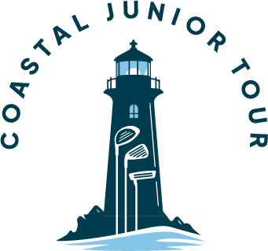

Golf on the Gulf Coast, run by PGA Professionals.
The Coastal Golf Association runs the Coast Open, the Coastal Junior Tour, PGA Jr. League and PGA HOPE, with events at clubs across the Mississippi Gulf Coast.

The 2026 Coast Open presented by Galleria BMW
Championship golf on the Mississippi Gulf Coast, with divisions for professionals, amateurs, seniors, super seniors and juniors.
 Hosted by the Coastal Golf Association
Hosted by the Coastal Golf Association
Programs for every golfer
From a juniors' first tournament to a professional purse, every CGA program is organized and run by PGA Professionals.
The Coast Open
Our annual championship at Sunkist Country Club, with a professional purse and divisions for amateurs, seniors and juniors.
Coast Open
Coastal Junior Tour
Affordable, competitive tournaments for boys and girls at courses across the Gulf Coast, played under USGA rules.
Junior TourPGA Jr. League
Team golf for kids at Sunkist Country Club, coached by PGA Professionals, with matches against other teams.
See Sunkist teamsPGA HOPE
The PGA of America's free golf program for veterans and active-duty military, introducing golf to support physical, mental and social well-being.
Join a PGA HOPE sessionOur host courses
CGA events are played at some of the best clubs on the Gulf Coast. We're grateful to every course that hosts our players.
Built on honesty, integrity and respect.
The Coastal Golf Association grew out of the Coastal Junior Tour. Our goal hasn't changed: grow the game on the Mississippi Gulf Coast, give golfers of every age affordable, well-run competition, and help juniors take their game to the next level, including earning college opportunities.
Today the CGA brings the Junior Tour, PGA Jr. League, PGA HOPE and the Coast Open together under one association.
Allan Martel, PGA
PGA Class A Professional and owner of NeoGolf in D'Iberville and Ocean Springs.
Book a lesson →Rory Nelson, PGA
PGA Professional and General Manager of Sunkist Country Club.
Book a lesson →Thank you to our sponsors
Local businesses make affordable, well-run golf possible on the Gulf Coast.


Questions, sponsorships or getting involved?
Email us and Allan or Rory will get back to you. We're always glad to hear from players, parents, clubs and businesses that want to support golf on the Gulf Coast.
Email the CGA